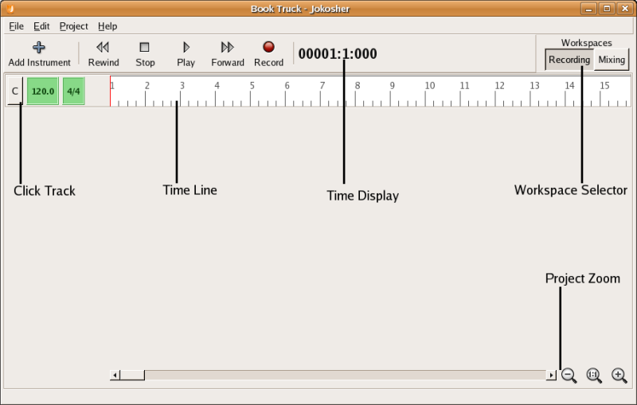
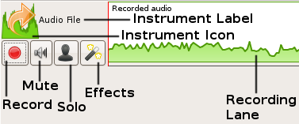

Jokosher User Guide
- Written by:
- Jono Bacon jono@jonobacon.org
- Jeff Ratliff jefrat@gmail.com
- Dennis Lichtenthäler dennis.lichtenthaeler@episode-iv.de
Version 0.2 for Jokosher v0.2
This guide is licensed under the GNU General Public License, version
2. Feel free to redistribute, copy and modify this guide within the
remit of the license. In fact, if something looks wrong or could be
better explained please let us know. See the Jokosher Documentation site for help
and the latest version of this manual. You can go directly to the
Jokosher User Documentation
site to comment on this manual, help with documentation, or
even write HOW-TOs and tutorials of your own!
CONTENTS
- Welcome!
- Getting Started
- The Main Jokosher Window
- The Workspaces
- Jokosher Extensions
- Instrument Effects
Welcome to the start of an exciting journey!
Jokosher is a simple to use, yet devilishly powerful Open Source
audio workstation. With it you can create and record music, audio and
other projects. Jokosher has been specifically designed around ease of
use and helping you to ignore the software and concentrate on your
projects. We have taken every step to make it as intuitive as possible,
but naturally a user guide is always helpful in explaining the
specifics. This is that user guide.
Jokosher is an organic piece of software and grows and improves
gradually. Due to its Open Source foundation, different people from
all over the world work on it to make it the best tool for creating
audio and music easily. Likewise, this guide reflects that organic
nature and also grows naturally. This guide presents you with a
complete guide to the features and facilities available in Jokosher. As
each new release pops its head over the horizon, this guide will
explain the awesome new features you can use.
Like any Open Source project, Jokosher and this guide needs your
help. Invariably in most Open Source projects, the documentation
always falls behind and does not track the progress of the application
it is documenting. We really, really don't want this to happen with
Jokosher. Our lovingly crafted Jokosher is made for musicians, and we
want it to be simple and easy to use, and this guide plays an essential
role. If something is incorrect, outdated or just plain broken, roll up
your sleeves and fix it. It will be a great contribution to this
important project.
Fire up Jokosher by selecting Applications->Sound & Video->Jokosher.
When Jokosher starts, you see the Welcome dialog shown in Figure 2-1:

Figure 2-1
The Welcome dialog box
The welcome dialog has a number of different facilities:
- Recent Projects - the list of recent projects
provide a simple means of accessing your most recent projects,
with the most recent ones at the top. To load a project just
double-click it.
- Create a New Project - click this button to create a
new Jokosher project. See Creating a New Jokosher Project
below.
- Browse for an Existing Project - this button pops up
a file dialog box to allow you to find an existing project file
on your computer. See Opening Jokosher Projects below.
- Preferences - clicking this button displays the main
Jokosher preferences window.
- Quit - click this to exit out of Jokosher.
You know, some people really hate welcome dialogs like this, so we
plonked a nice fat Don't show this on start-up tickbox. Tick it
to never be pestered by the welcome dialog again. There are a few cool
things you can configure for Jokosher start-up, see Configuring Jokosher
Preferences for the juicy bits.
So, which option did you pick? Well, lets run through them...
You can create project by either selecting the Create a New Project
button from the welcome dialog or by clicking File->New
Project in the main window.
A dialog box then appears and you are asked for some details:
- Project Name - enter a name for the project here.
This is most likely going to be the song title or podcast
title.
- Folder - select a folder where your project is held.
Please note that the folder you select will have a new
directory created for it. So, as an example, if you select
/home/bob/projects for this option and your Project Name is
Booya, a directory called booya inside /home/bob/projects will
be created.
- Author - enter your name or the name of your band in
this box. This is the author of the project.
When you have added these details, click the OK button to
continue.
If this is your first time using Jokosher, jump to
The Main Jokosher Window.
You can open existing projects by either selecting Browse for an
Existing Project from the welcome dialog or clicking
File->Open in the main window.
When you select this option, the GNOME file picker pops up. Jokosher
projects are stored in a directory with the same name as the project. Inside
that directory is a .jokosher file. Double click it to load it.
If this is your first time using Jokosher, jump to
The Main Jokosher Window.
The main Jokosher window is where the action happens (Figure 3-1):

Figure 3-1
The main Jokosher window
Unlike other less fun and fabulous multi-trackers, Jokosher does not
inflict lots of itty-bitty windows on you. Here everything happens
inside a single window, making it simple to see what is going on at any
one time.
Along the top side of the screen you can see a bunch of menus. You
can find virtually everything in those menus, and if you are stuck
figuring out how to do something, flick through the menus.
File
- New - opens a new project in the existing window. If
there are changes in the current project, you will be offered a
chance to save it. To add an instrument to the open project,
see Adding Instruments.
- Open - opens an existing project. If there are
changes in the current project, you will be offered a chance to
save it.
- Save - saves the current project. This option
quickly saves all information in the project including Undo and
Redo history.
- Save As - same as Save above, but this option allows
you to save the project under a different name.
- Close - closes the current project without closing
Jokosher. Again, you'll get a chance to save the project if
there are changes.
- Recent Projects - this submenu lists up to the last
8 projects opened in Jokosher. This is a convenient way to move
quickly from one project to another.
- Mixdown Project -
brings up a dialog that begins the final stage of your project
- the mixdown. Choose a name for the output file, a location
where you want it saved, and an output format. Jokosher will
then mix the project and save it as a single audio file in your
chosen format.
- Quit - quits Jokosher completely. You will get a
chance to save any unsaved work.
Edit
- Undo - Undoes the last change that you made to the
project.
- Redo - Redoes the last thing that was undone with
Undo.
- Cut - Removes the selected object from the project
and place it on the clipboard, replacing what was there
previously.
- Copy - Puts a copy of the currently selected object
on to the clipboard, replacing what was there previously.
- Paste - Places the contents of the clipboard into
the project. See Editing
Functions below for details on selecting pieces of
audio to cut, copy and paste
- Delete - Removes the selected object from the
project and discards it.
- Preferences - Opens the Jokosher Preferences window.
Project
- Add Instrument - see Adding Instruments below
- Change Instrument Type - Allows you to change the
type of an instrument. For example if you've added a Bass Drum and would later like to change it to a Drum Kit, you can do it with this function. Note that you can also change instrument type by clicking directly on the instrument icon within the Instrument lane.
- Instrument
Connections - This dialog lists each
instrument in the project and shows which input from your sound
card is connected to that instrument. For each instrument you
can change the connection by clicking the drop-down box and
choosing an input to connect.
- Time Format - Selects how time is displayed on the
Time Line. The options are Show as Bars, Beats,
Ticks or Show as Hours, Minutes, Seconds.
Extensions
- Manage Extensions - brings up the Extensions Manager
which allows you to add, remove or configure extensions.
See Jokosher Extensions below
for more information.
Help
- Pre-release Notes - Tells you the latest information
you'll need to know about this release fo Jokosher.
- Contributing to Jokosher - Lists details on all the
different ways you can contribute to Jokosher. Jokosher is still
in development and can always use your help.
- About
- Credits - Opens a dialog box that lists the
many people who have worked to bring you Jokosher.
- License - The complete license for
Jokosher.
Below the menus are the main toolbar buttons. These buttons are nice
and big to help you when perched over your desk holding your guitar.
They do a bunch of interesting things:
- Add Instrument - click this button to add an
instrument to the project. See Adding Instruments.
- Rewind, Play, Forward, Record - these buttons
control playback and recording.
- Time display - this shows the current elapsed time
in the project. Time will be displayed in hours, minutes and
seconds or bars, beats and ticks, depending on the time format
you've chosen in the Project menu.
- Workspace
Selector - these buttons allow you to switch
between the two workspace views in Jokosher.
- Click Track - this feature generates a click that
you can play along with. You can set speed (in beats per minute)
and time signature. To activate the click track, simply click the
metronome icon. You will then hear the beep during recording and playback.
- Time Line - this ruler gives you a visual
representation of your project in time. The line will be marked
off in measures or in seconds, depending on you current time
format.
- Project Zoom - this area at the bottom of the main
window will help you zoom in and out and scroll the project
quickly. The minus icon zooms the timeline out and the plus icon zooms
in. While the plus and minus icons zoom a step at a time, the slider between the two will zoom the timeline quickly by dragging the slider. You can also drag the scroll bar (to the left of the icons) to move the visible area of
your project if it doesn't all fit on the screen.
The Jokosher preferences menu can be found by clicking
Edit->Preferences. Here you can change settings that
determine how Jokosher works. Note that these settings will be saved
for Jokosher globally, not on a per-project basis.
- Application Start-up - Chooses how Jokosher
will act when it first starts. The three options are:
- Show welcome dialog - the default.
Choose this option if you'd like to pick a
project every time Jokosher starts.
- Open most recent project - Choose
this option if you'd like to skip the welcome
dialog and jump to the project you had open the
last time you used Jokosher.
- Don't open anything - Choose this
option if you want total control. You can open
a project later from the File menu.
- Recorded Audio Format - Changes the format in which
Jokosher saves recorded instruments while working on a
project.
- Audio Playback Device - Changes the audio hardware used for
playback. Again this depends on the hardware installed
on your system. You may only have one option.
Inside the recording view, only the instruments are displayed. This
is where you will spend most of your time recording, editing and
re-recording.
Recording is the first step in the process of creating a project.
You will add Instruments, usually one at a time, record audio into that
Instrument, then add the next instrument. Working in the recording view
usually follows the steps listed here:
- Add Instruments - See Adding Instruments below
for details on this process. After an Instrument is added, you
will see that it has the following features (See Figure
4-1):

Figure 4-1
Instrument Features
- Instrument Icon - the same icon you saw when
you chose the Instrument.
- Instrument Label - this can be changed at
will simpy by clicking on it. It is just a label to
identify the Instruments in case you have several with
the same icon.
- Record Button - this button will be clicked
to "arm" the Instrument during recording.
- Mute Button - this button will silence the
Instrument uring playback.
- Solo Button - the opposite of the mute
button. When ressed, you will hear this Instrument as
"solo" during playback, with all other Instruments
muted.
- Effects Button - allows you to configure
effects for this instrument. See Instrument
Effects for details.
- Recording Lane - to the right of the buttons
is an area here recorded audio will be displayed for
this instrument.
- Set Connections - as explained in Instrument
Connections above, the different sound card inputs
can be routed to different Instruments at will. In this way,
even if there is only one input, by connecting it to each
Instrument in turn multiple Instruments can be recorded.
- Record - at this point you are ready to record this
Instrument. If it's a live instrument, plug it in, press the
"arm" button, then hit the Record button on the main
Toolbar. When done recording, click Stop. To record an
existing audio file, right-click on the Instrument recording
lane then click Import Audio File. Find the file you'd
like to import, then click Open. Notice that the audio
is now in the recording lane for that Instrument. The waveform
shows you the volume level at any point in the recording.
- Repeat - unarm this Instrument and begin the process
again by adding the next Instrument until all Instruments are
recorded.
Once all Instruments are recorded, editing begins. Think of the
Instruments as raw materials that you will shape into a final project.
Jokosher offers several tools to help with editing.
- Move - this function shifts a piece of audio in
time. To Move a piece of audio, click it and drag it
left or right until it is in the desired position. When
recording Instruments separately, this function can be used to
get Instruments in synch with each other.
- Volume fades - volume levels can be edited for pieces of audio. Select a section of an
instrument by pressing Shift, then clicking and dragging. You see a selection as in figure 4-2 below.
Notice the red fade points, which will initially be labelled "100%". Simply grab the fade point and drag
up and down to adjust volume at that point.

Figure 4-2
Selection features
- Cut and Paste - this function moves pieces of audio
from one place to another. If you don't want to Cut a
complete recording, Split it into pieces or Trim
as above to separate the piece you'd like to work with. Next
click on the peice you'de like to Cut, click
Edit->Cut (or press Ctrl-X). Click in the spot
where this piece should go. Click Edit->Paste (or
press Ctrl-V).
- Copy and Paste - this function is used to make
copies of the same audio in more than one place. It is similar
to Cut and Paste above. First select a piece of audio,
then click Edit->Copy (or press Ctrl-C). Click
in the spot where this piece should go. Click
Edit->Paste (or press Ctrl-V).
- Delete - this removes a piece of audio completely
from a Project. Select the section you want to delete then
click Edit- >Delete or press the Delete key on
the keyboard.
- Undo - in case you accidentally deleted a piece of
audio or pasted it into the wrong spot, you can easily revert
that mistake. Simply select Edit->Undo (or press
Ctrl+U) and the last change you performed will be reverted.
You can undo more steps by repeating the process.
- Redo - if you wish to bring back a change you reverted
with the Undo function, you can use Redo. Just click
Edit->Redo (or press Ctrl+R) and the last change
you reverted with undo will be restored.
This is the main mixing view. This view displays smaller versions of
your Instrument tracks as well as mixing sliders for adjusting
instrument volume levels. This is where you mix your final project.
Much of the functionality of the Recording View is still
available. The emphasis, though, is on getting the balance right
between the Instruments.
Volume Slider - each Instrument has a corresponding slider.
These sliders control the overall volume in the mix of that Instrument.
Volume is displayed on the slider as a range from 0 to 1.00. Notice
that as the slider is moved, the volume level changes audibly and
visually.
Instrument Hide - at the top of each slider is an icon that
can be clicked to hide that Instrument. It's still there, just out of
the way. At the bottom of the screen just above the status bar is an
Instruments Not Shown: list. Click on an Instrument in the list
to bring it back. Hiding Instruments is useful when you havve many
Instruments and only want to work on a few at a time. For example if
you have 3 vocalists, you could mute and hide all other Instruments,
while you mix the vocals.
Master volume - at the far right of the screen is the
Master Volume slider. This slider changes the overall volume of
the project.
Instruments are a key concept in Jokosher. Think in Instruments
instead of Tracks. Instrument allow you to tell a lot about your
project at a glance. Tracks are just tracks!
Currently, instruments are very simple - they just contain the name
and icon of the instrument. In the future we plan on storing audio
settings for each type of instrument. As an example when you use a
Snare drum, the EQ will be optimised for a Snare drum.

Figure 4-3
Adding instruments is simple
To add and instrument, click on the Add Instrument button to bring
up the dialog. Simply pick the instrument that is closest to what
you'll be recording. Click OK and you're done.
Notice that once an instrument is added, you can click on its name
and change it to anything you want.
Jokosher now has a new feature called Extensions. This allows for
third party developers to add features to Jokosher, make it support new
file types or even do something amazing that none of us has anticipated.
You can configure Extensions in the Extensions menu which contains
at least the Manage Extensions item which brings up the Extensions Manager
(Figure 5-1). Depending on what extensions you have installed, other entries
may appear in this menu.

Figure 5-1
Extension Manager
The extension manager allows you to see a list of installed extensions. You
can also:
- Add an extension - installs an extension into
Jokosher. This opens up a file selection dialog that allows
you to chose an
.py or .egg file. After
confirming that you really want to install the extension, you should
see it in the Installed Extensions list.
See Finding New Extensions
below for more information on getting new extensions.
- Remove an extension - removes the currently selected
extension from your system.
- Preferences - allows you to configure the currently
selected extension. What you can configure here, depends entirely
on the extension. Please see its documentation for more information.
- Close - closes the Extension Manager and brings you back
to the Jokosher Main Window.
Extensions are a new feature for Jokosher version 0.2. To find extensions that are currently available,
check the Development site.
Join in the Jokosher Forums to hear news on new extensions,
discuss ideas, and contribute information on extensions you're working on.
If you'd like to write an extension, full documentaion on the extension system is available
on the Jokosher Development Website
Jokosher allows audio effects to be applied to each individual instrument. Just click the Effects Button
on a particular instrument and you will be presented with the Effects Window for that instrument (Figure 6-1).

Figure 6-1
the Effects Window
Add effects - the dropdown box on the left will list all the
effects you have installed on your system. From this list select the
effect you would like to use. Click on the Add button and that
effect will be added to the Instrument. In the same way you can add as
many effects as needed.
Adjust effect settings - once and effect is added, double
click the orange box for an effect to pull up the effect settings
dialog. Settings available will depend on the specific effect.
In this dialog you can tweak all the settings for a particular
effect. Click OK when done
Preview effects - Click the Play button at the bottom of the Effects Window and the Instrument will be played back with the effects
so you can hear the changes.
Effects Presets - when you've configured a group of effects
that you'd like to keep, they can be saved together as a preset. In the
text box labelled Presets type the name for this preset
(whatever you'd like to call it), then click Save. The next time
you add effects to an Instrument, this preset will be available in the
drop down list for you to use again.
Delete effects - to remove an unwanted effect, click the red
circle on the upper right corner of the orange box for that
effect. The effect will be removed. No confirmation is requested, so be
careful when deleting effects.